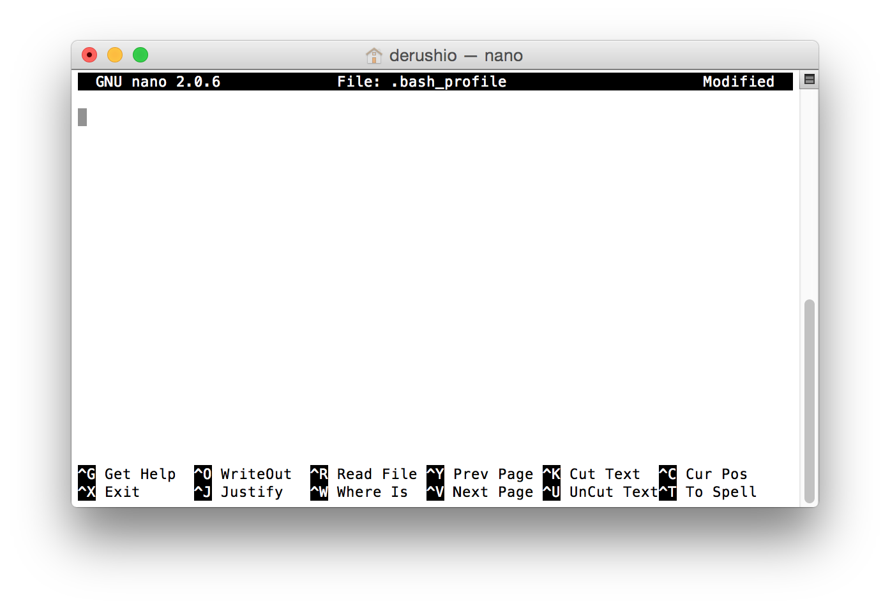
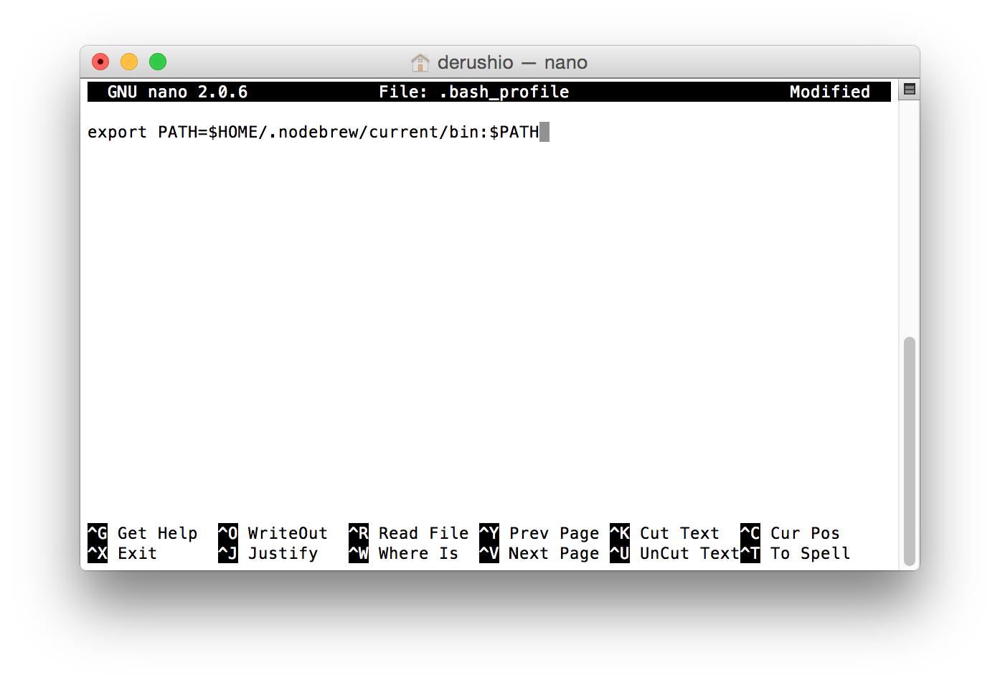
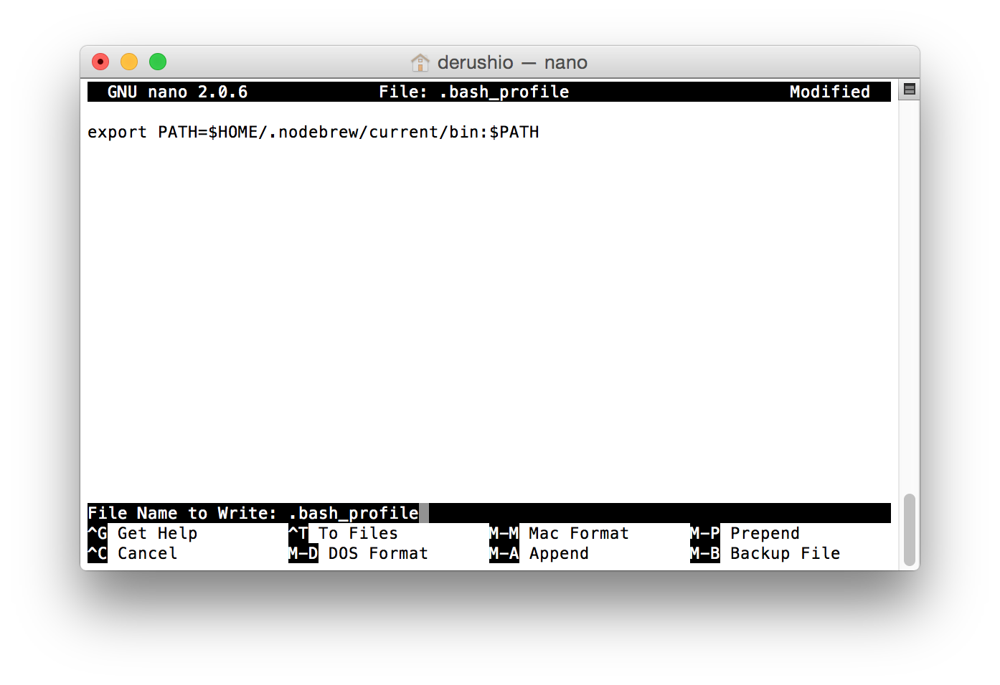
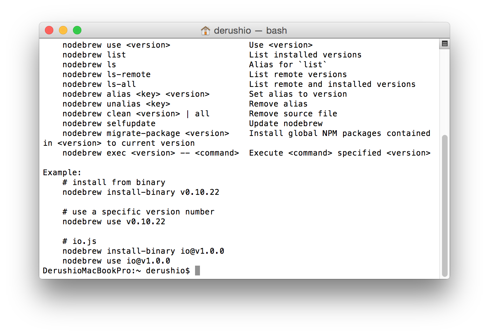
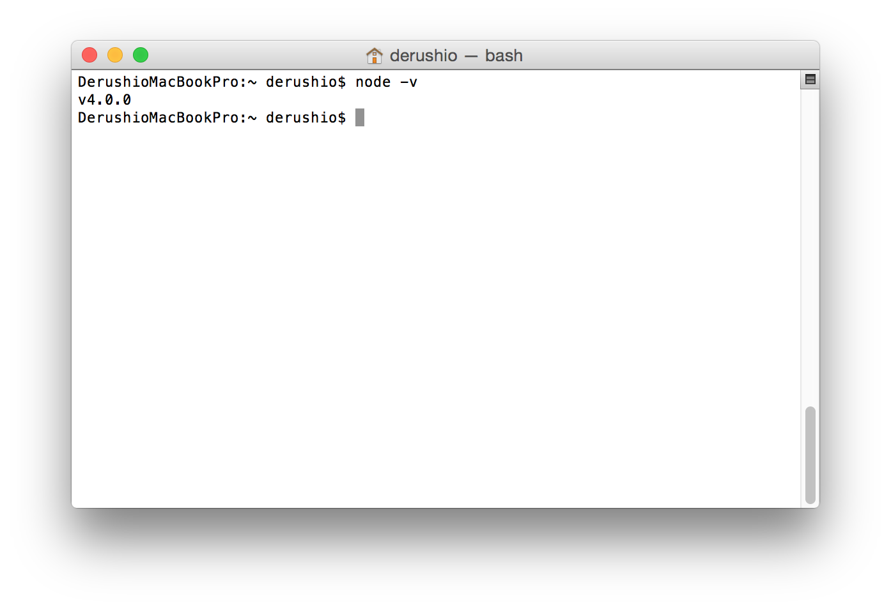

Node.js
nodebrew
0. すでにインストールされている場合は削除
もしくは、このページの 3. から始める
node を実行して何か反応がある場合は下のコマンドを一行づつ実行
curl -o uninstall-node.sh https://gist.githubusercontent.com/nicerobot/2697848/raw/uninstall-node.shchmod u+x uninstall-node.sh./uninstall-node.shrm uninstall-node.shsudo rm -rf /usr/local/include/nodesudo rm -rf /usr/local/lib/dtracerm -rf ~/.node-gyprm -rf ~/.npmrm -rf ~/.sourcemint
1. インストール
- Terminal.appを開く
curl -L git.io/nodebrew | perl - setupを入力してenter
終了するとAdd path: export PATH=$HOME/.nodebrew/current/bin:$PATHと画面に表示される
cd ~/を入力してenterpico .bash_profileを入力してenterexport PATH=$HOME/.nodebrew/current/bin:$PATHを貼り付ける control+oentersource .bash_profileを入力してenternodebrewを入力してenter
ここまででnodebrewのインストールは終了
成功していれば  上の画面のように反応がある
2. Node.jsをnodebrewにインストール
nodebrew install-binary stableを入力してenternodebrew use stable
ここまででNode.jsのインストールは終了
node -vを入力してenter後に  この画面のようにバージョンが表示されていれば成功
3. bowerをインストール
npm install -g bowerを入力してenterbowerを入力してenter- 何か表示されれば成功